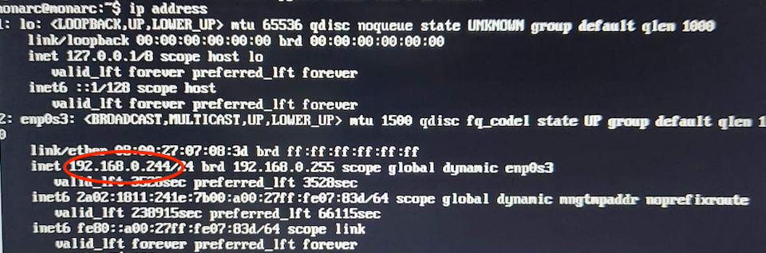

1. Introduction
1.1. Purpose
This document is intended to administrators of a MONARC instance. If you find errors or omissions in this document, please don’t hesitate to submit an issue or open a pull request with a fix.
1.2. Other documents
|
Note
|
|
2. Requirements
2.1. System and software
The deployment of MONARC is mainly tested on Ubuntu 18.04 LTS. In order to install MONARC you will need the following requirements:
Postfix, or an equivalent software, is required for the account creation and password recovery features.
You will find more details about the installation here.
2.2. Specifications by server
| Back office | MONARC | Reverse proxy | Configuration server | |
|---|---|---|---|---|
Number of vCPU |
4 |
4 |
Not that powerful. But all connections (for the BO and FOs) will go through it. |
Not that powerful. Mainly used for the creation of clients on the different FOs. |
RAM (GB) |
4 |
16 |
||
HDD (GB) |
20 |
50 |
Of course these values are minimum requirements. MONARC can be installed on a Raspberry Pi. It is always better to forecast more memory and disk space for MONARC (front office) since it will host the data of the analysis.
2.3. Network
The deployment on the different servers requires an Internet connection since the updates are retrieved from our GitHub repositories. If this is hardly possible in your environment due to an internal policy, you need to configure a proxy in order to access to Internet. This is an important requirement since all MONARC updates, including security updates, are provided from the Git repositories.
The ansible playbook also needs an Internet connection in order to dynamically deploy new clients.
The servers (or the proxy) should be able to contact:
-
github.com
-
api.github.com
-
pypi.python.org
-
registry.npmjs.org
-
deb.nodesource.com
-
getcomposer.org
-
.packagist.org
-
packagist.phpcomposer.com
-
letsencrypt.org
-
APT repositories
To make the different servers use the proxy, specify the address of your proxy
in the file /home/ansible/.bash_profile. For example:
export http_proxy=http://proxy.your.domain.com:4128
export https_proxy=http://proxy.your.domain.com:41282.4. TLS certificate
Is is strongly advised to use a TLS certificate.
In the case you are using MONARC with a back office you can set the certificate on the reverse proxy. The ansible playbook is compatible Let’s Encrypt auto-renew certificates. You will find more information in the ansible playbook.
If you are not using a back office you can simply configure the certificate on the front office server.
3. Architecture
3.1. Modules of the project
The source code of MONARC is divided in several modules with dedicated Git repositories.
Modules |
|
|
|---|---|---|
Interfaces (in node_modules/) |
3.2. Global architecture
Basically MONARC is composed of two main parts:
-
a back office: for the management of the security models, FO servers and clients of MONARC installations;
-
a front office: for the management of the risks analysis. A front office instance can be used without the back office.
|
Note
|
If you want run your own risk analysis you only need the front office. More information about the installation in this section. |
The whole architecture includes an additional reverse proxy (RPX) and a configuration server (CFG). It is possible to connect many front offices (FO) to one back office (BO). The deployment is managed with ansible. More information in the repository of the ansible playbook.
MOSP is a platform to create, edit and share JSON objects. The goal is to gather security related JSON objects, in the first place aimed to be used with MONARC. You can use any available schemas in order to create new JSON objects. You can have a look at official instance operated by NC3. MONARC instances can directly query MOSP in order to update their knowledge base. You can have a look at the documentation of MOSP.
Stats Service is an API for the collection and processing of stats data from different MONARC instances.
|
Note
|
Example of IPs and FQDNs:
|
In this example, the FO server monarc-fo01 hosts two distinct databases for two clients. An Apache Virtual Host is also configured for each clients. A user who wants to do a security analysis with MONARC will access to his MONARC account via the address https://my.monarc.lu/formation/
Note that the common database of the BO is listening on 0.0.0.0:3306.
It is strongly recommended to use a TLS certificate on the reverse proxy in order to provide a HTTPS connection between Internet and the reverse proxy. In our example, a TLS certificate for my.monarc.lu is used.
3.3. Network requirements
The configuration server (CFG) manages the configurations of the back office, reverse proxy and different front office(s) via SSH.
The reverse proxy (RPX) should of course be available from Internet. The DNS is important for the reverse proxy in order to resolve the FQDNs of the servers inside the network.
Through the reverse proxy you should be able to contact the BO and the FOs from Internet. No need to able able to contact the configuration server from the outside.
The database common of the BO should also be available to the FO servers.
Postfix should be installed on the BO and on the FO. Indeed, SMTP is used for the account creation and the password recovery. The easiest configuration is to set up Postfix for relaying emails through your internal mail server (SMTP).
4. Installation / Deployment
4.1. MONARC Front Office application
There are 2 ways of installing or deployment of the MONARC Front Office application.
4.1.1. Prepared virtual machine
Virtual machine can be used in case if you would like to have a locally installed instance of the MONARC Front Office on you PC or laptop. It is possible to use the VM installation on server, but not recommended.
Here are the steps to be performed in order to launch the application:
-
Install Virtual Box application. Can be downloaded here.
-
Download the image from the last release of MONARC (file with the
*.ovaextension). -
Import the image into your VirtualBox application: Menu
File→Import Appliance, select the *.ova image and follow the steps. -
Configure the imported image:
Setting→Network→ selectBridged Adapterand click OK. -
Start the VM:

-
Use the displayed IP in your browser to launch the application (here http://192.168.1.54). Recommended to use Mozilla Firefox or Google Chrome.
-
Login to your application. the credentials are provided on the GitHub release page, section
MONARC applicationand usually login:admin@admin.localhost, password:admin. -
Profit! Create and perform your risk analyzes.
4.1.2. Manual deployment
Follow the instructions here.
4.2. MONARC Back Office application.
In case if you would like to install the MONARC Back Office application.
|
Note
|
This is useful if you plan to manage several clients. If you want run your own risk analysis you only need the front office. More information about the installation in this section. |
The whole architecture can be deployed with ansible.
4.2.1. Requirements
-
Git and Python on all servers;
-
ansible must be installed on the configuration server;
-
Postfix on the BO and all FO servers (for the password recovery feature of MONARC).
4.2.2. Usage
Install ansible on the configuration server and get the playbook for MONARC:
sudo apt-get install python-pip
sudo -H pip install ansible dnspython
git clone https://github.com/monarc-project/ansible-ubuntu.git
cd ansible-ubuntu/4.2.3. Configuration
-
create a user named ansible on each server;
-
generate a SSH key for the user ansible on the configuration server:
ssh-keygen -t rsa -C "your_email@example.com"-
copy the public key on the other servers:
ssh-copy-id ansible@BO
ssh-copy-id ansible@RPX
ssh-copy-id ansible@FO-
add the user ansible in the sudo group:
sudo usermod -aG sudo ansible-
add the user www-data in the ansible group:
sudo usermod -aG ansible www-data-
give the permission to ansible to use sudo without password:
echo 'ansible ALL=(ALL:ALL) NOPASSWD:ALL' >> /etc/sudoers-
create a file inventory/hosts:
[dev]
FO
[dev:vars]
master= "BO"
publicHost= "monarc.example.com"
[master]
BO monarc_sql_password="password"
[rpx]
RPX.localhost
[monarc:children]
rpx
master
dev
[monarc:vars]
env_prefix=""
clientDomain="monarc.example.com"
emailFrom="info@example.com"
github_auth_token="<your-github-auth-token>"
protocol="https"
certificate="sslcert.crt"
certificatekey="sslcert.key"
certificatechain="sslcert.crt"
bourlalias="monarcbo"
localDNS="example.net"The variable monarc_sql_password is the password for the SQL database on the BO.
-
finally, launch ansible:
cd playbook/
ansible-playbook -i ../inventory/ monarc.yaml --user ansibleansible will install and configure the back office, the front office and the reverse proxy. Consequently the configuration server should be able to contact these servers through SSH.
You will find more information in the ansible playbook.
4.2.4. Launch ansible periodically with cron
$ crontab -l
# m h dom mon dow command
*/30 * * * * /home/ansible/ansible-ubuntu/playbook/update.sh /home/ansible/ansible-ubuntu BOThis cron task should be launched on the configuration server by the ansible user.
If a new client is created via the web interface of the back office, this task will instantiate a new MONARC instance (new database, new Apache VirtualHost and eventually a new server) for the newly created client.
4.2.5. Update the ansible playbook
$ cd /home/ansible/ansible-ubuntu/
$ git pull origin master5. Updates
Before updating MONARC it is advised to configure database backup.
For that you need to create a file data/backup/credentialsmysql.cnf:
[client]
host = localhost
user = sql-monarc-user
password = your-password
socket = /var/run/mysqld/mysqld.sock
[mysql_upgrade]
host = localhost
user = sql-monarc-user
password = your-password
socket = /var/run/mysqld/mysqld.sock
basedir = /usrIf this file is not present, a warning message will be displayed during the update.
5.1. System update
Keep the software of your distribution up-to-date (Apache, PHP, MariaDB, Postfix, etc.). At least the security updates from the GNU/Linux distribution.
5.2. MONARC update
5.2.1. Update a single MONARC instance
If you have already installed MONARC and want to update to a later version, you can use the provided script:
$ ./scripts/update-all.sh -c
$ rm -Rf ./data/cache
$ sudo systemctl restart apache2.serviceUpdates from the last stable release of MONARC will be retrieved.
For more details the script will:
-
backup your databases in case the update fails (if enabled, as explained previously);
-
check the presence of composer and if needed install it;
-
retrieve the new code from the last stable release (master branch):
-
pull updates for module/[MonarcCore, MonarcBO/MonarcFO] via composer;
-
pull updates for node_modules/[ng_anr, ng_backoffice/ng_client].
-
-
run the appropriate database upgrade scripts;
-
update the translations.
Please be aware that by default the update script will run database migrations
This behavior can be changed by passing the -b option to the update script.
5.2.2. Update MONARC when connected to a back office
When MONARC is connected to a back office and has been deployed with the ansible playbook, three steps are required for a full proper update.
-
Update of the back office
-
Update of MONARC
-
Update of the configuration server (ansible playbook)
Always use the ansible user.
Back office
$ su ansible
$ cd /var/lib/monarc/bo/MonarcAppBO/
$ ./scripts/update-all.sh
$ sudo systemctl restart apache2.serviceFront office
$ su ansible
$ cd /var/lib/monarc/fo
$ ./scripts/update-all.sh -b
$ sudo systemctl restart apache2.serviceConfiguration server
$ su ansible
$ cd /home/ansible/ansible-ubuntu/
$ git pull origin masterIf you have any problem you can check the section dedicated to the common issues.
6. Stats Service
Stats Service is a service that helps Monarc applications aggregate statistics from its different instances and serves Monarc applications with the data, plain or transformed to different formats for the charts' views. The stats, displayed in the Monarc Front Office local user interface on Global Dashboard tab, is called Local Instance Statistics.
Different installations of Stats Service can also share the statistics to the Global Statistics (Monarc dashboard) that can be used for the community and future weather forecast. The shared data do not have an identification of Monarc Front Office instance.
An architecture of Monarc Front Offices and Back Offices instance(s) communicated with Stats Service(s) and Global Statistics can be found here.
6.1. Installation of the Stats Service
Depends on the Monarc project infrastructure the Stats Service can be installed in different places.
In case if the Monarc installation has a Back Office instance, which means that you most probably have multiple Front Office instances, it is recommended to install Stats Service on the same server where the Back Office app is installed. The reason is that all the Front Office instances as well as Back Office need to be able to communicate with Stats Service. But having a separate (virtual) server for StatsService is also a good solution.
6.2. Accounts on the Stats Service
In order to send and get the statistics to/from the Stats Service you need to create accounts for each of your Front Office instances.
Note. This operation is done by ansible,
but in case of installations of only Front Office instance(s) or if ansible is not used, the process can be done manually.
There is a console command to create an account, needs to be executed from your Stats Service home folder:
contrib/create_client.sh {YourClientName}where {YourClientName} is a name of your Front Office instance.
The output should contain the following lines (for example):
~/stats-service$ contrib/create_client.sh Cases
UUID: c08e380f-7ec0-43ff-bca2-4505856739e0
Name: Cases
Role: 1
Token: ECsBPF5Lh3NreoSUTsxwDESri0UuIkpmHcHk6Zr8lXXQX_TVNAEnGv_6hGvmyBVw9XONpUCw2KIGoufRJ4jCFB
Created at: 2021-01-01 12:51:18.7760376.3. Configuration of Front Office instance
Note. Ansible does the job for us, the configuration is needed when it is not used.
When the client is created on Stats Service side, the generated token need to be set in the Front Office(es) configuration file(s).
The other option to be setup is the Stats Service baseUrl. The value depends on its installation and can be, for instance, an ip address of the Back Office server. The default port is 5005.
6.4. Configuration of the cronjob
The user, under which the crontab is executed, should have read and execute permissions to the following files:
-
/var/lib/monarc/fo/scripts/collect-stats-for-all-clients.sh -
/var/lib/monarc/fo/vendor/monarc/frontoffice/bin/console
Note. The permissions are set by ansible during the deployment process, but in case if ansible is not used, then permissions can be set like:
chmod 755 /var/lib/monarc/fo/scripts/collect-stats-for-all-clients.sh`
chmod 755 /var/lib/monarc/fo/vendor/monarc/frontoffice/bin/console`The cronjob needs to be scheduled on daily base to have a precise stats data evolution and changes.
It is possible to create a cronjob file (name can be e.g. stats-collector) in the directory /var/etc/cron.d/ with the following content:
05 00 * * * www-data /var/lib/monarc/fo/bin/console monarc:collect-stats >> /var/log/crontab/collect-stats.logIn case of multiple Front Office instances:
05 00 * * * www-data /var/lib/monarc/fo/scripts/collect-stats-for-all-clients.sh >> /var/log/crontab/collect-stats.logOr modify the crontab for a particular user (e.g. www-data): sudo -u www-data crontab -e
05 00 * * * /var/lib/monarc/fo/bin/console monarc:collect-stats >> /var/log/crontab/collect-stats.logIn case of multiple Front Office instances:
05 00 * * * /var/lib/monarc/fo/scripts/collect-stats-for-all-clients.sh >> /var/log/crontab/collect-stats.logTo be able to log the stats collection output, needs to be created the file in log directory with the write permissions for the user, which executes the cronjob:
sudo mkdir -p /var/log/crontab
sudo touch /var/log/crontab/collect-stats.log
sudo chmod 0766 /var/log/crontab/collect-stats.log6.5. Recommendations
It is recommended to test the integration between Front Office and Stat Service by executing the same command scheduled in the crontab:
/var/lib/monarc/fo/bin/console monarc:collect-statsIn case of multiple Front Office instances:
/var/lib/monarc/fo/scripts/collect-stats-for-all-clients.sh >> /var/log/crontab/collect-stats.logAs an output in the log file collect-stats.log should be list of UUIDs of analyses, the statistics collected for and sent to Stats Service.
6.6. Challenges
In case if your Front Office and Stats Service installed on different physical or virtual servers and there is a proxy configuration, you need to be sure that the internal connection goes directly. The user, which executes the cronjob, can have no-proxy environment setting, as far as it’s not needed for internal communication.
The servers connectivity can be traced with the network monitoring.
6.7. Global Dashboard on Stats Service
In order to make the web interface of Global Dashboard on Stats Service accessible, should be configured a virtual host and proxy settings to forward the particular requests to the service. It can be configured the same way as your Back Office instance access.